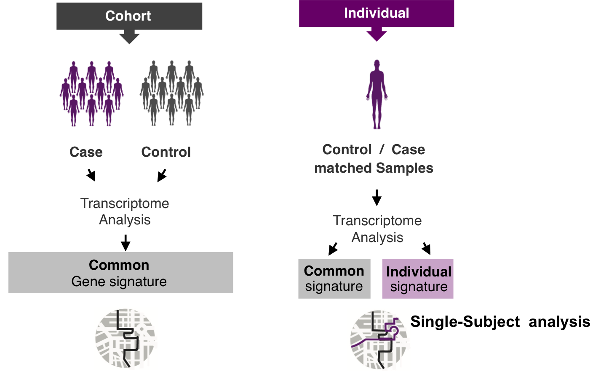
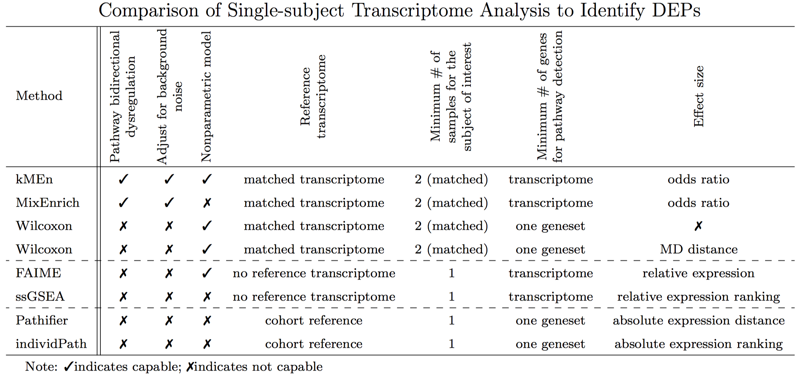
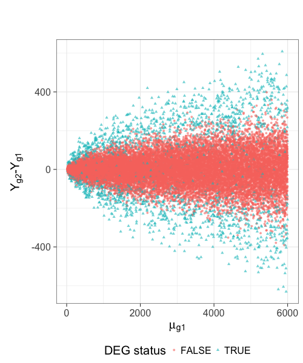
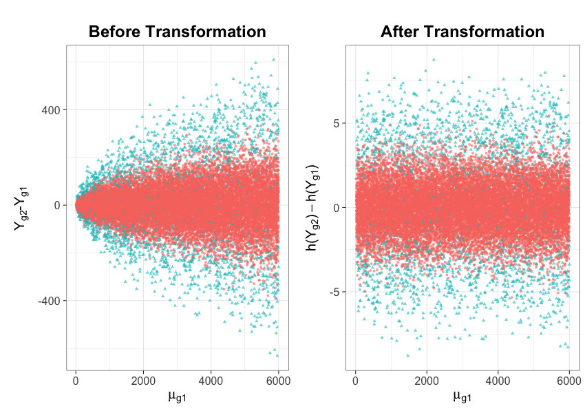
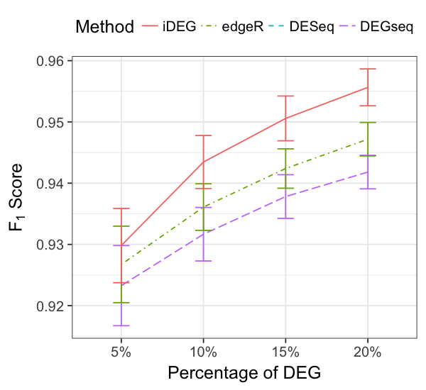
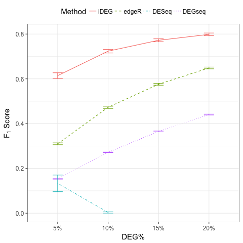
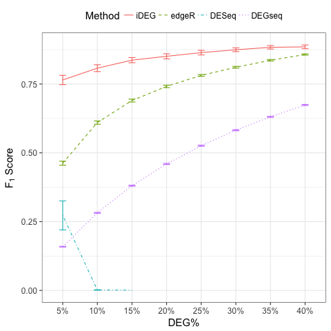
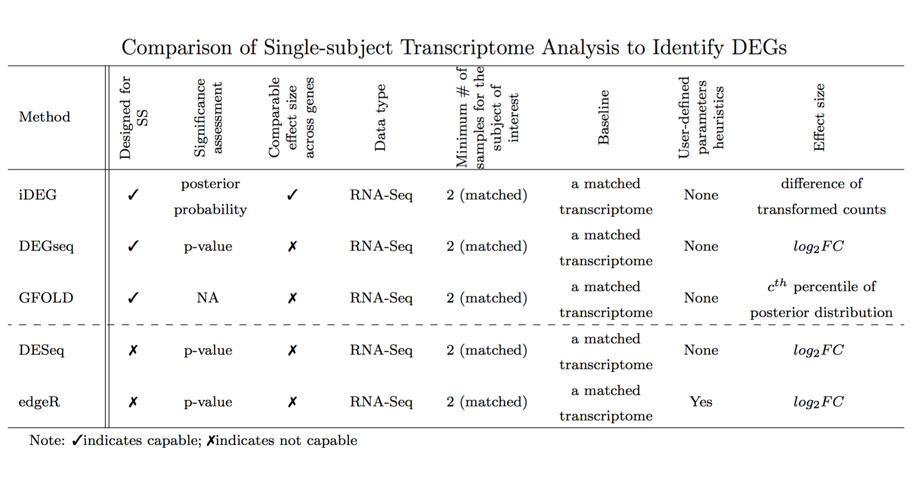

New Statistical Methods of
Single-subject Transcriptome Analysis for Precision Medicine
Qike Li
Lussier Group
Center for Biomedical Informatics & Biostatistics (CB2)
Statistics GIDP, University of Arizona
Statistical advisor: Dr. Hao Helen Zhang
Biomedical informatics advisor: Dr. Yves A. Lussier
Presentation outline
- Background & Motivating data
- Methodology
- MixEnrich
- kMEn
- iDEG
- Procedure
- Numerical studies
- Real data analysis
- Summary & future directions
Precision Medicine

Single-subject analysis
Single-subject analysis studies one patient at a time, with the purpose of revealing the patient-specific disease mechanisms for highly heterogeneous diseases.
Single-subject analysis
Strategies:
- Yang, X. et. al., 2012, PLoS Comput Biol
- Barbie, DA. et al., 2009, Nature
Single-subject analysis
Strategies:
- Drier, Y. et. al., 2013, Proc Natl Acad Sci
- Wang, H. et al., 2016, Biref Bioinform
Single-subject analysis
Strategies:
- Use two matched transcriptomes (e.g, disease vs. healthy tissue samples)
- Gardeux, V. et. al., 2014, JAMIA
- Schissler, AG. et al., 2015, Bioinformatics
Single-subject analysis

Example data of single-subject analysis
| Gene | Case expression | Baseline expression |
|---|---|---|
| A1BG | 92 | 72 |
| A1CF | 1 | 0 |
| A2BP1 | 0 | 2 |
| A2LD1 | 127 | 71 |
| A2ML1 | 773 | 12 |
| A2M | 11825 | 29385 |
| A4GALT | 871 | 891 |
| A4GNT | 1 | 5 |
| AAA1 | 0 | 0 |
| AAAS | 414 | 460 |
| … | … | … |
Our goal
From two matched transcriptomes, identify patient-specific molecular defects and cellular processes leading to a patient's pathology:
- differentially expressed pathways (DEP)
- differentially expressed genes (DEG)
Main Challenges
- "Single-subject Single-observation" (sample size = 1)
- Different genes have different variances.
- only two numbers for each gene
Our solutions
To identify DEP:
To identify DEG:
- iDEG
- Li, Q. et. al., 2010, BMC medical genomics
- Li, Q. et al., 2009, Journal of biomedical informatics
Presentation outline
- Background & Motivating data
- Methodology
- MixEnrich
- kMEn
- iDEG
- Procedure
- Numerical studies
- Real data analysis
- Summary & future directions
N-of-1-pathways MixEnrich
- Motivation
- Bidirectional pathway differential expression
- Background noise
- Goal
- Identify DEPs from two matched transcriptomes (e.g., cancerous vs. healthy).
- Method
- Step1: Gaussian mixture model to cluster genes
- Step2: FET for pathway over-representation of DEGs
- Results
- Simulation: higher precision and recall (bidirectional dysregulated, background noise)
- Head and neck cancer: compatible performance as conventional methods with more samples.
Publication
Presentation outline
- Background & Motivating data
- Methodology
- MixEnrich
- kMEn
- iDEG
- Procedure
- Numerical studies
- Real data analysis
- Summary & future directions
N-of-1-pathways kMEn
- Motivation
- Relax the Gaussian assumption of MixEnrich
- Goal
- Identify DEPs from two matched transcriptomes (e.g., cancerous vs. healthy).
- Method
- Step1: k-means to cluster genes
- Step2: FET for pathway over-representation of DEGs
- Results
- Simulation: high AUC
- HIV treatment dataset: correlates with CD4 counts
Methods comparison

Publication
More contributions to DEP study
- Review
- Vitali, Francesca, Qike Li, A. Grant Schissler, et. al., Briefings of Bioinformatics (under revision)
- Other DEP methods
- Schissler, A. Grant*, Vincent Gardeux*, Qike Li*, et. al., Bioinformatics (2015). (Intelligent Systems for Molecular Biology)
- Schissler, A. Grant*, Qike Li*, James L. Chen, et. al., Bioinformatics (2016). (Intelligent Systems for Molecular Biology)
* Joint first authorship
Presentation outline
- Background & Motivating data
- Methodology
- MixEnrich
- kMEn
- iDEG
- Procedure
- Poisson case
- negative binomial case
- Numerical studies
- Real data analysis
- Procedure
- Summary & future directions
Goal
Identify a set of patient-specific differentially expressed genes (DEGs) from two matched transcriptomes.
Example RNA-Seq quantified mRNA expression data (Single-Subject)
| Gene | Case expression | Baseline expression | Absolute Diff | FC |
|---|---|---|---|---|
| A1BG | 92 | 72 | 20 | 0.78 |
| A4GALT | 871 | 891 | 20 | 1.02 |
| … | … | … | ||
| gene-1 | 5 | 25 | 20 | 5 |
| gene-2 | 100 | 500 | 400 | 5 |
| gene-3 | 100,000 | 149,000 | 49,000 | 1.49 |
Modeling RNA data–Poisson
Model RNA-Seq data with Poisson distribution:
Modeling RNA data–negative binomial
Model RNA-Seq data with negative binomial distribution:
Existing methods and their limitations
- Arbitrary cutoff
- of gene expression fold changes
- of gene expression absolute differences
- GFOLD 1
- Poisson distribution assumption
- Ranks genes for differential expression,
- no significance assessment
1. Feng, J. et. al., 2012, Bioinformatics
Existing methods and their limitations
- DESeq1
- Negative binomial distribution assumption
- Treats the two samples as if they were replicates.
- DEGSeq2
- binomial distribution assumption
- Insufficient to model over-dispersed RNA-Seq data
- Anders, S. et. al., 2010, Genome biology
- Wang, L. et al., 2009, Bioinformatics
Existing methods and their limitations
- edgeR1
- Negative binomial distribution assumption
- Assigns an arbitrary value for the dispersion parameter of all genes
1.Robinson, M. D. et. al., 2010, Bioinformatics
Can we by-pass gene level estimation of expression variance?
Single-subject RNA-Seq data (Poisson)

Stabilize variance (Poisson)

Presentation outline
- Background & Motivating data
- Methodology
- MixEnrich
- kMEn
- iDEG
- Procedure
- Poisson case
- negative binomial case
- Numerical studies
- Real data analysis
- Procedure
- Summary & future directions
VST–Poisson
Assume
then
Summary statistic \(\scriptsize{Z_{g}}\)
Under null hypothesis:
Can we borrow strength across genes?
Two-group mixture model
Two groups:
The marginal mixture density is:
Two-group mixture model
The local false positive rate, \(fdr\), is the Bayes posterior probability that a gene \(g\) is a null gene given \(z_{g}\):
\(f_{0}\) corresponds to an empirical null distribution.
Blessing of high dimensionality
In practice, the theoretical null may be deficient due to various reasons:
- correlation across genes
- unobserved covariates (e.g. gender, age, smoking status, etc.)
- or failed mathematical assumptions (e.g. asymptotic approximation).
Algorithm
- Step 1. Apply the VST transformation to expression counts for each gene.
- Step 2. Compute the summary statistic \(Z_g\) for each gene.
- Step 3. Estimate the local false discovery rate \(fdr(z_g)\) for each gene.
Presentation outline
- Background & Motivating data
- Methodology
- MixEnrich
- kMEn
- iDEG
- Procedure
- Poisson case
- negative binomial case
- Numerical studies
- Real data analysis
- Procedure
- Summary & future directions
VST-negative binomial
Estimate \(\scriptsize{\delta_g}\)
Assumptions
- We assume \(\delta_{g1} = \delta_{g2} = \delta_{g}\) and \(\delta_{g}\) is a smooth function \(q(\cdot)\) of the expression mean \(\mu_{g}\).
- We assume the majority of the genes are null genes (\(\overline{\mathcal{G}}\)).
Estimate \(\scriptsize{\delta_g}\)
- Step 1: "Initial" estimate of \(\delta_g\)
Define the \(w^{th}\) window as
\begin{equation} \mathcal{G}_w= \{g: (w-1)^{th} ~ \mbox{percentile of} ~ Y_{g1} < Y_{g1} \leq w^{th} ~ \mbox{percentile of} ~ Y_{g1}\} \end{equation}Then all the null genes falling within the same window, \(\mathcal{G}_w\), roughly have the same mean and \(\delta\) values, i.e.,
\begin{equation*} Y_{gd} \overset{\cdot}{\sim} NB(\bar\mu_{w}, \bar\delta_{w}), \quad \forall g \in \mathcal{G}_w\cap\overline{\mathcal{G}} ~~ d=1,2, \end{equation*}
Estimate \(\scriptsize{\delta_g}\)
- Step 1: "Initial" estimate of \(\delta_g\)
Estimate \(\bar\mu_{w}\) and \(\bar\sigma_{w}\)
\begin{eqnarray} \hat{\bar\mu}_{w} &=& \text{Median} (Y_{g1}) \quad\forall g\in \mathcal{G}_w,\\ \hat{\bar\sigma}_{w} &=& \text{Median} (|Y_{g1} - \text{Median}(Y_{g1})|) \quad\forall g\in\mathcal{G}_w. \label{eq:MAD-win} \end{eqnarray}Compute \(\bar\delta_{w}\)
\begin{equation} \hat{\bar\delta}_{w} = \frac{\hat{\bar\sigma}_{w}^{2} - \hat{\bar\mu}_{w}}{\hat{\bar\mu}_{w}^{2}}, \quad w=1,\ldots, W. \end{equation}
Estimate \(\scriptsize{\delta_g}\)
- Step 2: "Refined" smooth estimate of \(\delta_{g}\)
Estimate the equation \(q\) by solving
\begin{equation} \label{eq:smoothFit} \min_{q\in\mathcal{Q}}\sum_{w=1}^{W} \{\hat{\bar\delta}_{w}-q(\hat{\bar\mu}_{w})\}^2 + \lambda\int [q^{''}(t)]^2 dt, \end{equation}Obtain the refined estimate
\begin{equation} \label{eq:prediction} \hat{\delta}_g = \hat{q}_\lambda(\hat{\bar\mu}_w), \qquad \forall g\in\mathcal{G}_w,~~ w=1,\ldots, W. \end{equation}
Compute local false discovery rate\(fdr\)
- compute the summary statistic \(Z_g\)
- compute the local false discovery rate
Algorithm
- Step 1. Group genes into windows based on their gene expression levels.
- Step 2. Compute \(\hat{\bar{\mu}}_{w}\) and \(\hat{\bar{\sigma}}^2_w\) for each window \(w\), and obtain a "raw" estimate of \(\delta_g\).
- Step 3. Obtain a "refined" estimate of \(\delta_g\) by fitting a smoothing spline.
Algorithm
- Step 4. Apply the VST \(h_{nb}\) to each gene expression count.
- Step 5. Compute the standardized summary statistics \(Z_{g}\) for each gene.
- Step 6. Estimate the local false discovery rate locfdr for each gene.
Presentation outline
- Background & Motivating data
- Methodology
- MixEnrich
- kMEn
- iDEG
- Procedure
- Numerical studies
- Real data analysis
- Summary & future directions
Simulate a single-subject dataset
Simulate a pair of transcriptomes:
Simulate a single-subject dataset
Simulation Procedure
- Step 1: Simulate one single-subject dataset, which contains \(p \%\) DEG.
- Step 2: Conduct iDEG, edgeR1, DESeq2, and DEGseq3.
- Step 3: Compute an F1 score for each method,
- Step 4: Repeat Step1-Step3 for 1000 times
- Step 5: Calculate the arithmetic mean and standard deviation of the 1000 \(F_{1}\) resulted from each method.
- Step 6: Change the value of \(p\), repeat Step 1-Step 5
1. Robinson, M. D. et. al., 2010, Bioinformatics; 2. Anders, S. et. al., 2010, Genome biology ;
3. Wang, L. et al., 2009, Bioinformatics
Performance eval–NB
| DEG% | Method | Precision | Recall/TPR | FPR | F1 | # Predicted DEG |
|---|---|---|---|---|---|---|
| 5% | iDEG | 0.93 (1.6×10-2) | 0.679 (2.5×10-2) | 0.003 (7.2×10-4) | 0.784 (1.5×10-2) | 730 (34) |
| edgeR | 0.39 (8.4×10-3) | 0.948 (7.1×10-3) | 0.078 (2.8×10-3) | 0.552 (8.6×10-3) | 2,433 (54) | |
| DESeq | 0.999 (2.1×10-3) | 0.152 (3.8×10-2) | 0 (1.8×10-5) | 0.262 (5.8×10-2) | 152 (38) | |
| DEGseq | 0.086 (6.7×10-4) | 0.985 (3.9×10-3) | 0.549 (3.9×10-3) | 0.159 (1.2×10-3) | 11,409 (74) |
Performance eval–NB

Performance eval–Poisson

Sensitivity Analysis
The two main assumptions we make:
- The value of dispersion parameter is a function of expression mean.
- The majority of the genes are null genes.
Sensitivity Analysis
- Draw dispersion parameter \(\delta_{g}\) from a uniform distribution, \(\text{unif}(0.001, 0.1)\).

Sensitivity Analysis
- Simulate single-subject datasets with a series of percentages of DEG.

Presentation outline
- Background & Motivating data
- Methodology
- MixEnrich
- kMEn
- iDEG
- Procedure
- Poisson case
- negative binomial case
- Numerical studies
- Real data analysis
- Procedure
- Summary & future directions
Data
Two matched transcriptomes from an African American woman with triple negative breast cancer (TNBC).
- 1092 breast cancer patients were studied by TCGA[1].
- 2 A.A. with matched tumor/healthy samples.
- A.A. 12.7% of the total U.S. population[2].
- Disproportionately affects women with African origin[3].
- TNBC has poor prognosis and considerable heterogeneity[4].
- A set of her specific DEGs and match some of these DEGs to the targets of a therapeutic drug.
[1] Cancer Genome Atlas Network, 2012, Nature ; [2] www.census.gov; [3] Dietze, E. C., et. al., 2015, Nature Reviews Cancer [4] Bianchini, G., et. al.,2016 Nature Reviews
iDEG result
| Gene | local_fdr | Z |
|---|---|---|
| ADIPOQ | 2.85e-34 | -11.17 |
| PLA2G2A | 2.85e-34 | -11.65 |
| PI16 | 1.15e-33 | -10.78 |
| LEP | 2.25e-33 | -10.70 |
| SFTPB | 1.44e-32 | -10.59 |
| IL33 | 4.24e-31 | -10.36 |
| TUSC5 | 6.74e-31 | -10.32 |
| CSF3 | 2.89e-29 | -10.04 |
| COL6A6 | 3.24e-29 | -10.04 |
| CCL21 | 1.99e-28 | -9.90 |
| … | … | … |
Some interesting genes
- ADIPOQ & LEP
- Their gene products (Adiponectin, leptin) are considered as mediators for the association of breast cancer with obesity.
- PLA2G2A:
- Inhibits invasion and metastasis of gastric and colon cancer.
- May predict survival.
- TUSC5:
- Methylation induced down-regulation of TUSC5 in breast cancer.
LEP: Anders, Nalabolu. M.R., et. al., 2014, Hematology-oncology and stem cell research . ADIPOQ: Grossmann, M. E., et al., 2009, Cancer and Metastasis Reviews.
PLA2G2A: Ganesan, K., et. al., 2008 Cancer Research ; Movahedian, A., et. al., 2016 Research in Medical Sciences; Fijneman, R. J., et. al., 2009 Analytical Cellular Pathology; Xing, X.-F., et. al., 2011 Histopathology .
TUSC5: Bubnov, V., et. al., 2012 Exp Oncol
Presentation outline
- Background & Motivating data
- Methodology
- MixEnrich
- kMEn
- iDEG
- Procedure
- Poisson case
- negative binomial case
- Numerical studies
- Real data analysis
- Procedure
- Summary & future directions
Summary of contributions
- MixEnrich (DEP)
- Bidirectional pathway differential expression
- Resistant to transcriptome background noise
- Head and neck cancer study
- R implementation
- kMEn (DEP)
- Nonparametric robust model
- HIV treatment study
- R implementation
- iDEG (DEG)
- By-passing gene-level variance estimation
- Strength borrowing across genes
- TNBC study
- R implementation
- github.com/QikeLi/iDEG
Future directions
- Extend the single-subject methods beyond the Case-vs.-Baseline design.
- Extend iDEG for gene-set analysis
- Explore applications of single-subject methods in discovering the differences and similarities among patients.
Acknowledgements
Committee members
- Jin Zhou
- Joseph W. Watkins
- Yves A. Lussier
- Hao Helen Zhang
 spa
spa
- Statistics GIDP
- The Lussier Group
- College of Medicine
- CB2
- UofA Biostatistics
- My family

Questions?
Backup slides
DEG methods comparison

Performance eval–Poisson
| DEG% | Method | Precision | Recall/TPR | FPR | F1 | # Predicted DEG |
|---|---|---|---|---|---|---|
| 5% | iDEG | 0.987 (5.0e-03) | 0.878 (1.4e-02) | 0.001 (2.4e-04) | 0.929 (6.9e-03) | 889.28 (1.6e+01) |
| edgeR | 0.919 (9.2e-03) | 0.934 (7.7e-03) | 0.004 (5.2e-04) | 0.926 (6.6e-03) | 1016.25 (1.2e+01) | |
| DESeq | NaN (NA) | 0 (0.0e+00) | 0 (0.0e+00) | NaN (NA) | 0 (0.0e+00) | |
| DEGseq | 0.903 (1.0e-02) | 0.942 (7.2e-03) | 0.005 (6.1e-04) | 0.922 (6.7e-03) | 1043.46 (1.3e+01) | |
| 10% | iDEG | 0.989 (3.3e-03) | 0.902 (9.4e-03) | 0.001 (3.4e-04) | 0.944 (4.7e-03) | 1825.02 (2.2e+01) |
| edgeR | 0.922 (6.2e-03) | 0.951 (4.8e-03) | 0.009 (7.7e-04) | 0.937 (4.1e-03) | 2063.76 (1.7e+01) | |
| DESeq | NaN (NA) | 0 (0.0e+00) | 0 (0.0e+00) | NaN (NA) | 0 (0.0e+00) | |
| DEGseq | 0.907 (6.5e-03) | 0.96 (4.0e-03) | 0.011 (8.4e-04) | 0.932 (4.0e-03) | 2116.16 (1.7e+01) | |
| 15% | iDEG | 0.99 (2.7e-03) | 0.912 (7.2e-03) | 0.002 (4.5e-04) | 0.949 (3.6e-03) | 2761.82 (2.6e+01) |
| edgeR | 0.926 (4.3e-03) | 0.958 (3.7e-03) | 0.014 (8.5e-04) | 0.942 (3.0e-03) | 3105.45 (1.8e+01) | |
| DESeq | NaN (NA) | 0 (0.0e+00) | 0 (0.0e+00) | NaN (NA) | 0 (0.0e+00) | |
| DEGseq | 0.91 (4.9e-03) | 0.966 (3.2e-03) | 0.017 (1.0e-03) | 0.937 (3.1e-03) | 3187.71 (2.0e+01) | |
| 20% | iDEG | 0.991 (2.0e-03) | 0.921 (6.0e-03) | 0.002 (4.7e-04) | 0.955 (3.0e-03) | 3714.22 (2.8e+01) |
| edgeR | 0.93 (4.4e-03) | 0.964 (2.9e-03) | 0.018 (1.2e-03) | 0.946 (2.6e-03) | 4145.66 (2.4e+01) | |
| DESeq | NaN (NA) | 0 (0.0e+00) | 0 (0.0e+00) | NaN (NA) | 0 (0.0e+00) | |
| DEGseq | 0.913 (4.6e-03) | 0.971 (2.4e-03) | 0.023 (1.4e-03) | 0.941 (2.7e-03) | 4254.62 (2.5e+01) |
Performance-NB(varing \(\scriptsize \delta_g\))
| DEG% | Method | Precision | Recall/TPR | FPR | F1 | # Predicted DEG |
|---|---|---|---|---|---|---|
| 5% | iDEG | 0.93 (1.6×10-2) | 0.679 (2.5×10-2) | 0.003 (7.2×10-4) | 0.784 (1.5×10-2) | 730 (3.4×101) |
| edgeR | 0.39 (8.4×10-3) | 0.948 (7.1×10-3) | 0.078 (2.8×10-3) | 0.552 (8.6×10-3) | 2433 (5.4×101) | |
| DESeq | 0.999 (2.1×10-3) | 0.152 (3.8×10-2) | 0 (1.8×10-5) | 0.262 (5.8×10-2) | 152 (3.8×101) | |
| DEGseq | 0.086 (6.7×10-4) | 0.985 (3.9×10-3) | 0.549 (3.9×10-3) | 0.159 (1.2×10-3) | 11409 (7.4×101) | |
| 10% | iDEG | 0.945 (1.1×10-2) | 0.708 (2.2×10-2) | 0.005 (1.1×10-3) | 0.809 (1.2×10-2) | 1500 (5.9×101) |
| edgeR | 0.447 (6.2×10-3) | 0.96 (4.3×10-3) | 0.132 (3.3×10-3) | 0.61 (6.0×10-3) | 4296 (6.0×101) | |
| DESeq | 1 (0) | 0 (5.2×10-4) | 0 (0) | 0.002 (1.4×10-3) | 1 (1.0×100) | |
| DEGseq | 0.165 (1.1×10-3) | 0.986 (2.5×10-3) | 0.556 (4.2×10-3) | 0.282 (1.6×10-3) | 11974 (7.6×101) | |
| 15% | iDEG | 0.953 (7.0×10-3) | 0.746 (1.6×10-2) | 0.006 (1.1×10-3) | 0.837 (9.1×10-3) | 2348 (5.8×101) |
| edgeR | 0.537 (5.7×10-3) | 0.964 (3.7×10-3) | 0.147 (3.4×10-3) | 0.69 (4.8×10-3) | 5384 (5.9×101) | |
| DESeq | 1 (NA) | 0 (3.3×10-5) | 0 (0) | 0.001 (NA) | 1 (1.0×10-1) | |
| DEGseq | 0.235 (1.4×10-3) | 0.986 (2.1×10-3) | 0.565 (4.2×10-3) | 0.38 (1.9×10-3) | 12562 (7.3×101) | |
| 20% | iDEG | 0.962 (4.6×10-3) | 0.763 (1.3×10-2) | 0.008 (1.0×10-3) | 0.851 (7.8×10-3) | 3175 (6.4×101) |
| edgeR | 0.602 (5.7×10-3) | 0.966 (2.8×10-3) | 0.16 (3.9×10-3) | 0.742 (4.4×10-3) | 6419 (6.4×101) | |
| DESeq | NaN (NA) | 0 (0) | 0 (0) | NaN (NA) | 0 (0) | |
| DEGseq | 0.299 (1.6×10-3) | 0.986 (2.0×10-3) | 0.577 (4.2×10-3) | 0.459 (1.9×10-3) | 13180 (6.8×101) |
Performance eval–NB(constant \(\scriptsize \delta_g\))
| DEG% | Method | Precision | Recall/TPR | FPR | F1 | # Predicted DEG |
|---|---|---|---|---|---|---|
| 5% | iDEG | 0.957 (1.0× 10-2) | 0.733 (1.9× 10-2) | 0.002 (4.7× 10-4) | 0.83 (1.1× 10-2) | 765.73 (26) |
| edgeR | 0.532 (1.1× 10-2) | 0.935 (7.7× 10-3) | 0.043 (1.9× 10-3) | 0.678 (9.0× 10-3) | 1759.67 (39) | |
| DESeq | 1 (0) | 0.07 (3.6× 10-2) | 0 (0) | 0.131 (6.1× 10-2) | 70.35 (36) | |
| DEGseq | 0.102 (9.0× 10-4) | 0.985 (3.9× 10-3) | 0.459 (4.4× 10-3) | 0.184 (1.5× 10-3) | 9698.75 (85) | |
| 10% | iDEG | 0.966 (8.2× 10-3) | 0.78 (1.9× 10-2) | 0.003 (8.2× 10-4) | 0.863 (9.7× 10-3) | 1615.71 (50) |
| edgeR | 0.639 (8.8× 10-3) | 0.947 (5.2× 10-3) | 0.06 (2.3× 10-3) | 0.763 (6.8× 10-3) | 2966.41 (42) | |
| DESeq | NA (NA) | 0 (0) | 0 (0) | NA (NA) | 0 (0) | |
| DEGseq | 0.19 (1.6× 10-3) | 0.986 (2.8× 10-3) | 0.468 (4.5× 10-3) | 0.318 (2.3× 10-3) | 10394.48 (80) | |
| 15% | iDEG | 0.969 (5.1× 10-3) | 0.814 (1.5× 10-2) | 0.005 (8.3× 10-4) | 0.884 (7.7× 10-3) | 2519.36 (54) |
| edgeR | 0.699 (7.2× 10-3) | 0.954 (4.1× 10-3) | 0.073 (2.5× 10-3) | 0.807 (5.2× 10-3) | 4098.27 (44) | |
| DESeq | NA (NA) | 0 (0) | 0 (0) | NA (NA) | 0 (0) | |
| DEGseq | 0.266 (2.1× 10-3) | 0.987 (2.1× 10-3) | 0.48 (5.0× 10-3) | 0.419 (2.6× 10-3) | 11127.73 (86) | |
| 20% | iDEG | 0.974 (4.2× 10-3) | 0.828 (1.5× 10-2) | 0.006 (1.0× 10-3) | 0.895 (7.8× 10-3) | 3401.67 (74) |
| edgeR | 0.741 (6.0× 10-3) | 0.96 (3.2× 10-3) | 0.084 (2.6× 10-3) | 0.836 (4.1× 10-3) | 5181.78 (45) | |
| DESeq | NA (NA) | 0 (0) | 0 (0) | NA (NA) | 0 (0) | |
| DEGseq | 0.333 (2.3× 10-3) | 0.987 (1.9× 10-3) | 0.494 (5.0× 10-3) | 0.498 (2.6× 10-3) | 11857.92 (80) |
Performance eval–NB (constant \(\scriptsize \delta_g\))